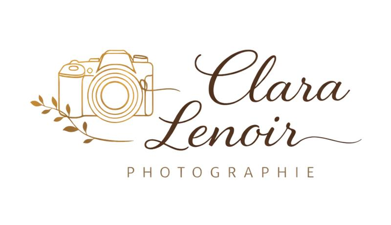

Clara Lenoir Photographie
Capturer l'émotion, révéler la beauté du moment
Réserver une séance Voir mes réalisations

Capturer l'émotion, révéler la beauté du moment
Réserver une séance Voir mes réalisations
Une approche humaine et poétique pour des instants figés à jamais
Reportage photo complet, des préparatifs à la soirée, capturant les émotions et les petits détails d'une journée inoubliable.
Une série de portraits réalisés en extérieur, jouant avec la lumière du matin pour un rendu doux et poétique.


Shooting professionnel pour la communication interne et externe de l'entreprise, avec une mise en scène moderne et dynamique.
Paysages majestueux, contrastes puissants et jeux de lumière au cœur des terres islandaises.

Les photos de notre mariage sont magnifiques ! Clara a su saisir les émotions avec beaucoup de sensibilité. Chaque image raconte une histoire.
Amélie
Mariage
Un super moment passé en séance ! Clara met à l'aise et sait diriger sans forcer. Résultat : des portraits naturels et percutants.
Julien
Portrait professionnel
Nous avons adoré la séance en extérieur. Les enfants se sont amusés et les photos sont pleines de vie et d'émotion.
Nadia
Shooting famille